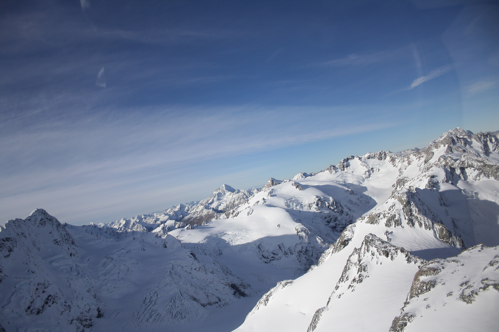
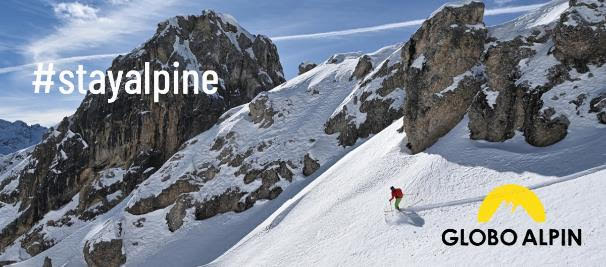
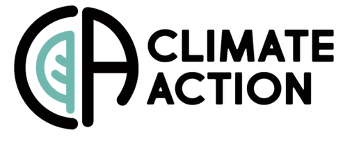

Schnee im Klimawandel
2024-06-09
Schnee als natürlicher Wasserspeicher
 
Warum leugnen oder verzögern?

Gewinn (nicht Umsatz) der Top 4 in Milliarden (!!)
2022: 151,6 Mrd $ 2023: 107,1 Mrd $
und
Top 10 Umsatz =~ BIP (PIL) Italiens (s. Time)
Danke


(in zufälliger Reihenfolge) Andrea Cicogna, Wolfgang Schöner, Stefano Urbani, Sven Kotlarski, Luca Mercalli, Alberto Bellin, Alice Crespi, Roberto Barbiero, Dino Zardi, Daniele Cat Berro, Michael Winkler, Bruno Majone, Giorgia Marcolini, Alexander Jacob, Roberto Cremonini, Mauro Gaddo, Mattia Faletto, Viktor Weilguni, Gabriele Chiogna, Claudia Notarnicola, James Peter Zellner, Christoph Marty, Marcello Petitta, Ludovica De Gregorio, Sara Ratto, Andrea Debernardi, Gernot Resch, Paola Cianfarra, Giacomo Bertoldi, Samuel Morin, Marc Zebisch, Ulrich Strasser, Andrea Sušnik, Michele Bozzoli, Yuri Brugnara, Simon C. Scherrer, Valentina Premier, Günther Geier, Alberto Trenti, Anna Napoli, Walter Beozzo, Carlo Maria Carmagnola, Silvia Terzago, Isabelle Gouttevin, Carlo Marin, Mauro Valt, Jean-Michel Soubeyroux, Lavinia Laiti, Lorenzo Giovannini, Mattia Callegari, Alessio Bozzo, Gregor Vertacnik und allen die täglich Schneemessungen gemacht haben und immer noch machen
